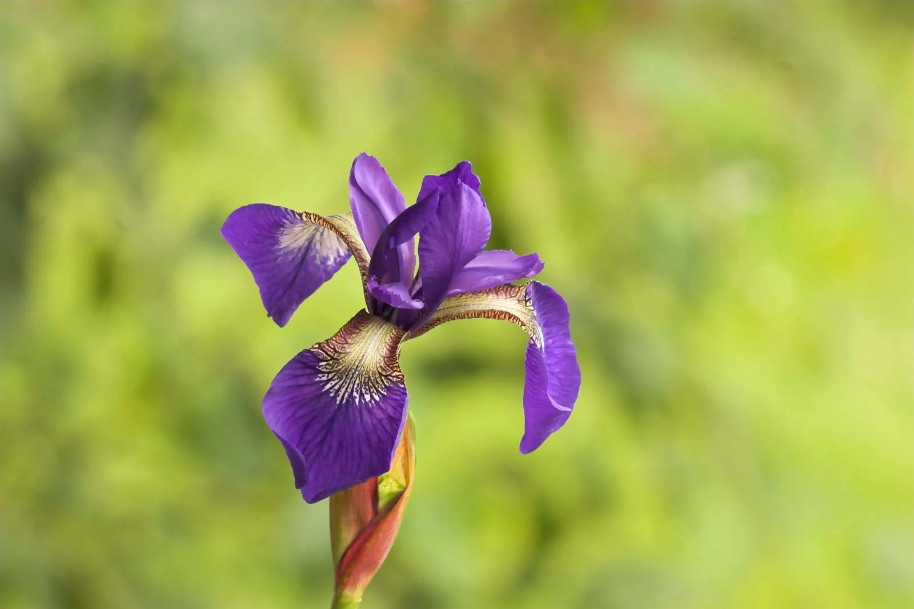

Iris
Irises are beautiful perennial plants known for their striking flowers and sword-like foliage. They come in a variety of colors, sizes, and forms, making them popular choices for gardens, borders, and landscaping. Here's a comprehensive guide on irises, including their types, planting procedure, and care.
Types of Irises:
- Bearded Irises (Iris germanica): These irises are known for their large, showy flowers with fuzzy "beards" on the falls (lower petals). They come in a wide range of colors and are prized for their fragrance.
- Siberian Irises (Iris sibirica): Siberian irises have narrow, grass-like foliage and delicate, elegant flowers in shades of blue, purple, and white. They are ideal for moist, well-drained soil and can tolerate partial shade.
- Japanese Irises (Iris ensata): Japanese irises have large, flat flowers with intricate patterns and bold colors. They prefer moist soil and are often grown near ponds or water gardens.
- Dutch Irises (Iris x hollandica): Dutch irises are hybrid irises with tall, slender stems and bold, colorful flowers. They are commonly grown for cut flowers and can be planted in gardens or containers.
What to do and what not to do
- Planting Procedure:
- Late Summer to Early Fall: Irises are typically planted in late summer to early fall, allowing them to establish roots before the onset of winter. Spring planting is also possible, but fall planting is preferred in many regions.
- Sunlight: Irises prefer full sun but can tolerate partial shade, especially in hot climates. Choose a planting location with at least 6 hours of sunlight per day for best flowering.
- Soil: Irises prefer well-drained soil with a pH level between 6.0 and 7.0. Sandy loam or loamy soil is ideal. Avoid planting irises in heavy clay soil that retains water, as it can cause root rot.
Weather in Kathmandu
Temperature: °C
Humidity: %
Condition:
Date & Time: